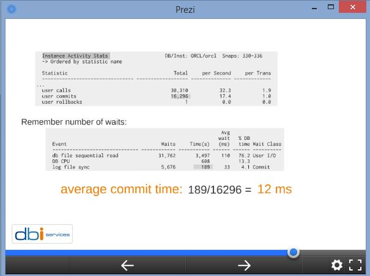
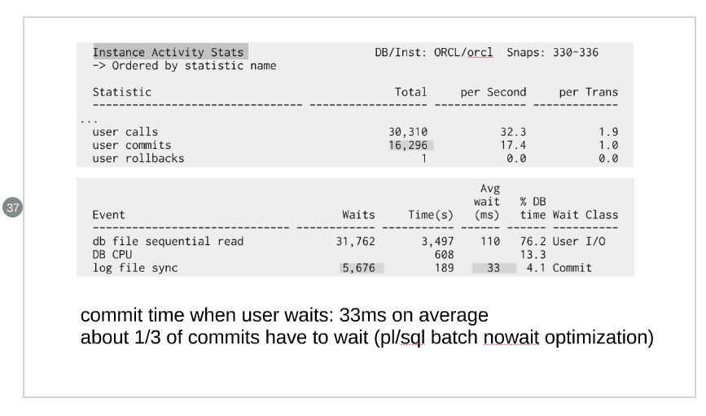

This was first published on https://www.dbi-services.com/blog/log-file-sync-user-commits/ (2016-01-10)
Republishing here for new followers. The content is related to the versions available at the publication date.
. 
When presenting ‘Interpreting AWR Reports – Straight to the Goal’ at UKOUG TECH15 I had a very good question about the Statspack report I read which had log file sync much smaller than user commits. I realized that this needs a longer explanation, and that my slide is very misleading because I divided log file sync wait time per user commits, which probably make no sense here.
‘log file sync’ occurs at commit time when your session waits that all redo protecting the transaction is written on disk. The idea is that when the end-user receives a ‘commit successful’ response, he expects that the changes are durable – as the D in ACID – even in case of instance crash. That means that the redo must be on a persistent storage.
In my presentation about reading an AWR report I show how we must always match the event time with the end-user response time. And that was probably my idea when dividing ‘log file sync’ by ‘user commits’. But that was probably a bad idea here and I’ll change this slide for the next presentation (soon: http://oraclemidlands.com/) because it makes no sense.
I’ll take simple examples to explain. In the first example I run 2000 insert + commit and chack the session statistics:
STAT/EVENT VALUE
-------------------------------------------------- ----------
STAT user commits 2000
STAT user calls 8017
STAT redo size 1121052
WAIT log file sync 2001
As you can see here, each commit (‘user commit’) increase the ‘log file sync’ event. It may be very quick if redo is already on disk but the wait event is always incremented.
Same with ‘commit write’ which uses the commit_logging and commit_wait parameters (the default here):
STAT/EVENT VALUE
-------------------------------------------------- ----------
STAT user commits 2000
STAT redo size 1171124
STAT commit batch/immediate requested 2000
STAT commit immediate requested 2000
STAT commit batch/immediate performed 2000
STAT commit immediate performed 2000
STAT commit wait/nowait requested 2000
STAT commit wait requested 2000
STAT commit wait/nowait performed 2000
STAT commit wait performed 2000
STAT execute count 4128
WAIT log file sync 2001
Same values here, but more detail. From the values we see that commit write IMMEDIATE WAIT was performed
I’ll not show all combinations here. Here is BATCH (to optimize redo size to write) and NOWAIT:
STAT/EVENT VALUE
-------------------------------------------------- ----------
STAT user commits 2000
STAT redo size 1034768
STAT commit batch/immediate requested 2000
STAT commit batch requested 2000
STAT commit batch/immediate performed 2000
STAT commit batch performed 2000
STAT commit wait/nowait requested 2000
STAT commit nowait requested 2000
STAT commit wait/nowait performed 2000
STAT commit nowait performed 2000
WAIT log file sync 1
With NOWAIT, we don’t wait for log writer and we don’t have any ‘log file sync’. Which means that the response time of the commit is nearly immediate (only the time to update the transaction table). But of course, we may lose a commited transaction if log writer didn’t have time to write it before an instance crash.
This is the case I have in my example, and this is the reason why ‘log file sync’ is lower than ‘user commits’;
Actually the example was done with Swingbench where transactions are done in a pl/sql procedure.
Here I’m calling 100 times a PL/SQL procedure that do 20 commits inside.
STAT/EVENT VALUE
-------------------------------------------------- ----------
STAT user commits 2000
STAT redo size 1044088
WAIT log file sync 101
PL/SQL default is different. It is doing something like NOWAIT BATCH implicitly. The idea is that you care that redo is persisted or not when it’s in the middle of a user call, because if it crashes, nobody has been notified that it is committed. Of course that may not be the right way if there are other users notified. We can go back to the SQL behavior by issuing ‘COMMIT WRITE’.
When the PL/SQL exits and there has been some commit done, an additional commit is done in WAIT mode this time, to be sure that all redo is persisted before returning to end-user.
The ‘log file sync wait event’ is actually the one that measure the number of times the end-user has waited on commit. And I was wrong to divide it by ‘user commits’. I’m changing the slide to the following. 
Hope to see you in Birmingham, Tuesday 26 January, 18:00 – 21:00
{kind=link}
{kind=link}